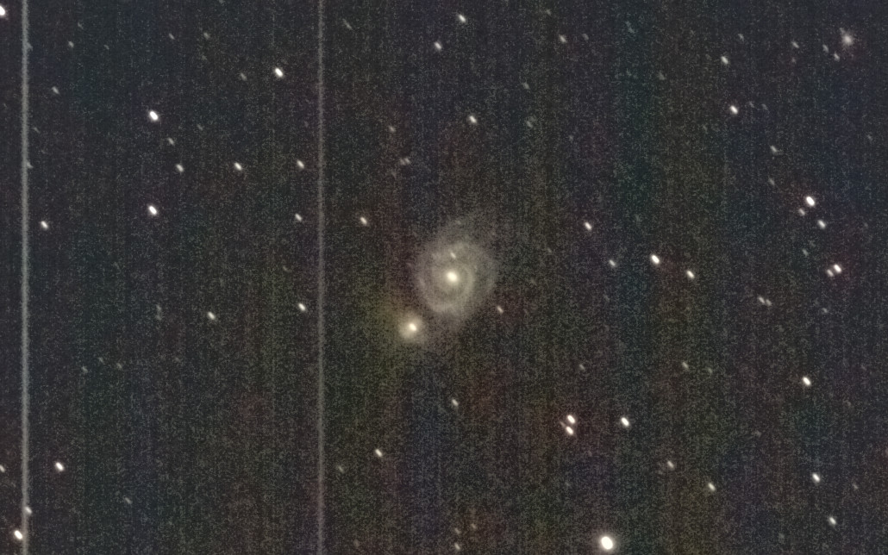

撮影した天体写真です
ネット上にあるものと比べると見劣りするものばかりですが、天体写真を撮ろうと考えている人の参考になれば幸いです画像サイズが大きいので更新されてもキャッシュが残っていて変化がない可能性があります 更新を確認するときはキャッシュを削除するとよいです
機材
ここにはミラーレスカメラという非常に安価な機材で自宅から５㎞圏内という光害地で固定撮影した天体写真を載せています 天体写真には最低でも何十万円もする機材が必要とか、山奥へ行かないと撮影できないなどと考ている人が多いかもしれませんが、実際にはこの程度の機材でもそこそこの写真が撮影できます。カメラを持っているなら、一度天体写真にチャレンジしてみてはいかがでしょうか Z50は入門機として人気なミラーレスカメラです。
価格はボディとダブルズームキットで約15万円です
センサーサイズはAPS-Cで、Hα線もカットするため、淡い天体を撮影するのには少し苦労します。
Z50は入門機として人気なミラーレスカメラです。
価格はボディとダブルズームキットで約15万円です
センサーサイズはAPS-Cで、Hα線もカットするため、淡い天体を撮影するのには少し苦労します。

ビデオカメラ用の三脚で撮影しています。 SDカードは32GBです もちろん赤道儀、望遠鏡、リレーズ、フィルターは使用していません
撮影場所
自宅から5km圏内で撮影しています SQM値は 21.15 (mag/arc sec^2)ほどです 天気のいい日には肉眼で天の川の構造や、M8の存在が確認できます。撮影方法
インターネットで天体の位置を覚えてから外に出て、覚えた方向にカメラを向け広角で撮影します（露出は20秒ほど) 天体を発見したらタイマー撮影を２秒に設定して最大望遠（35mm換算380mm）で試し撮りします（露出は4秒ほど） カメラの重さによる三脚のひずみを考えてセットします。画像全体の1/4ぐらい星の動く方向の逆方向にずらしておきます 最大望遠にしてマニュアルフォーカスでピントを合わせます（星が一番小さく、暗い星が一番多く見えるところ） タイマー撮影をオフにしてインターバルタイマー撮影で撮影します。 １枚の露出は１秒～３秒（北極星に近いほど長い）、撮影間隔は１枚の露出+１秒、撮影枚数は１秒露出で100枚（合計200秒）です。 SDカードをPCに刺して、sequatorで撮影した画像をスタッキングします。 sequatorは計算方法を"積む"、広角ならレンズのゆがみ補正をオンにし、銀河など中心部と周りの差が激しい場合は"高いダイナミックレンジ"をオンにします（これをしないと白飛びする）。フラット画像はとり方がよくわからないのでなしです。 tifファイルで出力してGIMPで開きます。目標の天体に白飛びがないように"露出"で明るさを補正します。 色を50にして新しいレイヤーを作り、モードをソフトライトにして放射グラデーションで背景の明るさが均一になるようにします（フラット補正） トーンカーブで色と明度を調整して、背景は黒つぶれしない程度に、ノイズが浮き出る限界ぐらいまで淡い部分を目立たせます。 トリミングしてpng非圧縮で出力します。苦労するところ
赤道儀なしでAPS-Cなのでノイズを減らすのは苦労します Hα線がカットされること、電線と街灯の光、三脚が弱くてひずむことには毎回悩まされます 予備バッテリーがなく、ミラーレスなのですぐに電池が切れます SDカードの容量もすぐになくなります リレーズがなくてタイマー設定するのも面倒です あと、GIMPでのフラット補正は強調処理後どう見えるかが分かりづらく何度もやり直します しかし、これらの苦労があってこその天体写真撮影です 撮影した写真を画像処理して、ネットや本にあるものと全く同じ形が浮かびあがってくるときは、毎回楽しいし感動します天の川
銀河系でもあります。北半球で見える範囲すべてを撮ってつなぎ合わせたいです冬の天の川
冬の天の川は夏の天の川に対して目立った構造もなく淡いです。肉眼ではほとんど見ることができませんでした
2023/03/19 25秒露出,15枚、自宅で撮影
星座が認識しやすい画像にすることができました。GIMPによるフラット補正で天の川を認識しやすくしましたカシオペヤ座付近の天の川
カシオペア座を通る天の川です。肉眼でなんとか見ることができました
2023/07/17 25秒露出,15枚、自宅で撮影
右上にアンドロメダ銀河がうつっています。光害がかなりありましたがフラット補正で対応しました夏の大三角付近の天の川
肉眼で暗黒帯までよく見えました
2023/07/17 25秒露出,15枚、自宅で撮影
夏の大三角を通る暗黒帯がはっきり見えます。個人的には色も気に入っています夏の天の川
天の川の非常に濃い部分です。少し目をならすだけではっきりと見えました
2023/07/17 25秒露出,20枚、自宅で撮影
sequatorを使い広角レンズのゆがみを補正してスタッキングすることでたくさんの枚数を使うことができました かなり気に入っています星雲、星団
星雲が好きなので星団はほとんど撮っていませんオリオン大星雲とランニングマン星雲
M42,M43,NGC1977
肉眼でも見えるとても明るい星雲です。肉眼で見ると３つの星が縦に並んだように見えます。
2023/03/20 １秒露出,280枚、公園で撮影
光害の少ない場所で撮影しました。淡い部分まで目立たせることができました燃える木星雲と馬頭星雲
NGC2024,IC434
肉眼では見えません 中央に見える明るい星がオリオン座の３つ星の左のアルニタクです
2023/03/20 １.５秒露出,300枚、公園で撮影
露出時間を多くとることで、ほとんどがHα線である馬頭星雲を目立たせることができましたばら星雲
NGC2244
冬の大三角にあるほとんどがHα線の星雲です。ほとんどがHα線なので、暗い場所でも肉眼では全く見えません
2023/03/15 １秒露出,300枚、公園で撮影
光害の少ない場所で撮影することでなんとか赤い部分を炙り出すことができましたプレアデス星団
M45
とても大きく明るい散開星団です。肉眼でよく見えます
2023/03/20 １秒露出,100枚、公園で撮影
撮影枚数も少なく、あまり出来のいい写真ではありませんが載せておきます。 今年のうちにリベンジしたいです。北アメリカ星雲
NGC7000
ほとんどがHα線の大きな星雲です。肉眼では赤くはありませんが見えないわけではないです
2023/06/18 ２秒露出,50枚、自宅で撮影
周りが明るい中でのHII領域は未改造カメラではかなり難しいです かなり強めに赤色を動かして北アメリカの形がわかるようにしました。次は枚数を増やしたいです干潟星雲、三裂星雲
M8,M20,M21
大型で肉眼で見えるほど明るい星雲です。 個人的には三裂星雲が好きです。
2023/06/18 １.５秒露出,180枚、自宅で撮影
明るいおかげではっきりと捉えることができましたわし星雲
M16
>Hα線の明るい星雲です。肉眼ではほとんど見えません
2023/08/08 １秒露出,250枚、自宅で撮影
よく見るとあの有名な創造の柱が見えます ノイズも多いので満足していませんオメガ星雲
M17
暗いところでは肉眼で見えるほど明るい星雲です。2023/08/11 １.6秒露出,300枚、自宅で撮影
この日は風が強くシーイングがひどかったので解像度は高く見えませんが 薄明後すぐに撮影し少しでも高度が高い状態で撮影したのと露出時間を多くとったことで淡い部分も認識できるようになりました惑星状星雲
恒星の残骸で、小さいのが特徴です。35mm換算380mmまでしか持っていないので、大きめのものでないとまともに写りません亜鈴状星雲
M27
２番目に大きい惑星状星雲です。2023/08/08 １秒露出,250枚、自宅で撮影
赤い部分がまだ微妙なのでリベンジしたいです
2023/08/10 １.６秒露出,７００枚、自宅で撮影
色、ノイズがよくなりました。形がよくわかります環状星雲
M57
こと座の大きめの惑星状星雲です。2023/08/08 １秒露出,250枚、自宅で撮影
実はかなりトリミングしてあります。さすが惑星状星雲という大きさです 宇宙のスケールを感じられてこれもいいかもしれません銀河
銀河はどれも形が面白いので好きです。しかし、ほとんどが淡いのでなかなか難しいですアンドロメダ銀河とその伴銀河
M31,M32,M110
とても明るく、大きい銀河で、肉眼でも見えます。超望遠で昇ってくるアンドロメダ銀河を建物といっしょに撮って圧縮効果で巨大に見せるのが夢です
2023/07/17 ２秒露出,280枚、自宅で撮影
南中のあたりで撮影したため、自宅でも淡いところを炙りだすことができました。暗黒帯が見えます
2023/08/11 １.６秒露出,500枚、自宅で撮影
南中の時にさらに露出を重ねました。暗黒帯がくっきり見えますボーデの銀河、葉巻銀河
M81,M82,NGC3077
明るい銀河です
2023/05/12 １秒露出,330枚、自宅で撮影
M81とM82を撮る予定で撮影したら、偶然左上に銀河が写っていました 高度の低い時に撮ってしまったので光害の影響が出て銀河の形をあまり炙り出せませんでしたさんかく座銀河
M33
アンドロメダ銀河からアンドロメダ座ミラクを挟んでちょうど逆にある銀河です。
2023/07/17 １秒露出,250枚、自宅で撮影
淡いですがなんとか渦を巻いているのが確認できます トーンカーブに苦戦しました。2023/08/11 １.６秒露出,600枚、自宅で撮影
さらに露出を重ねてみました。それでもノイズが多いです子持ち銀河
M51
とても明るい銀河です。銀河の中で３番目ぐらいには撮りやすいと思います 2023/05/09 １.５秒露出,300枚、公園で撮影
高度と公園撮影と露出を重ねたおかげで腕がはっきりわかります。 露出時間のせいでで星が流れてしまっています。１秒でリベンジしたいです。惑星
月
非常に明るく見える地球の惑星で、空を明るく照らすため天体観測するときの敵です。2023/05/12 ２秒露出,4枚、1/10秒露出,1枚、自宅で撮影
通常はどう頑張っても照らされている部分が白飛びするか、地球照の部分が黒つぶれするかになるのですが、2枚作ってGIMPでHDR合成のようなものをすることで両方がよく見える自然な画像ができました 肉眼以上のダイナミックレンジですおまけ
 今までに撮った天体と撮影した月を等倍で並べてみました。もちろん見かけの大きさです。下は上の1.5倍の大きさです
天体の初撮影の時にどのくらいの大きさで見えるのかがわからず困っていたことがあったので、他にも同じような人がいるかもしれないと思い作りました
これが一番需要あるかもしれません..
今までに撮った天体と撮影した月を等倍で並べてみました。もちろん見かけの大きさです。下は上の1.5倍の大きさです
天体の初撮影の時にどのくらいの大きさで見えるのかがわからず困っていたことがあったので、他にも同じような人がいるかもしれないと思い作りました
これが一番需要あるかもしれません..